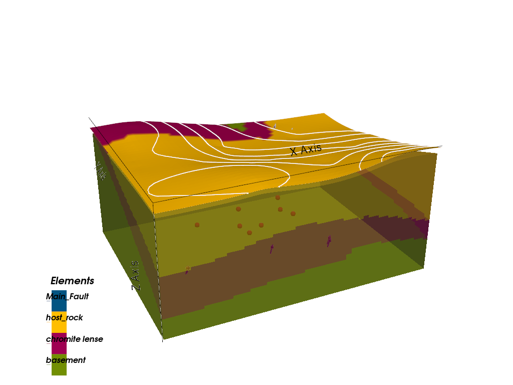
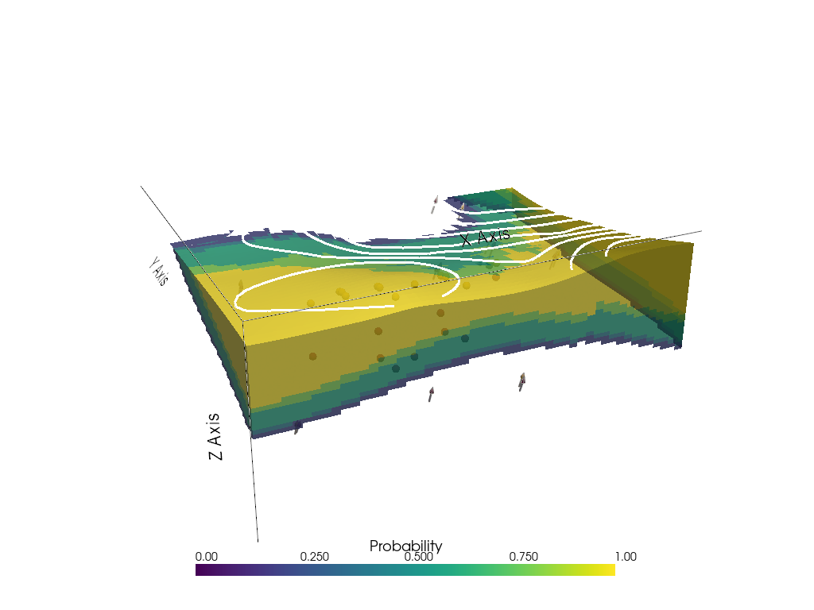
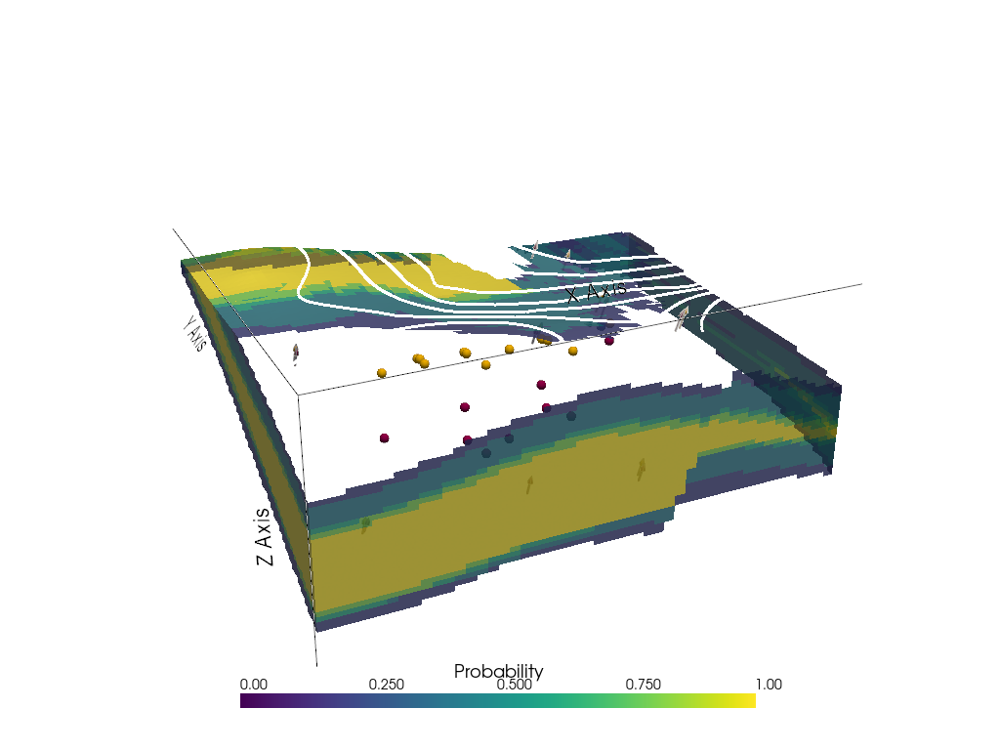
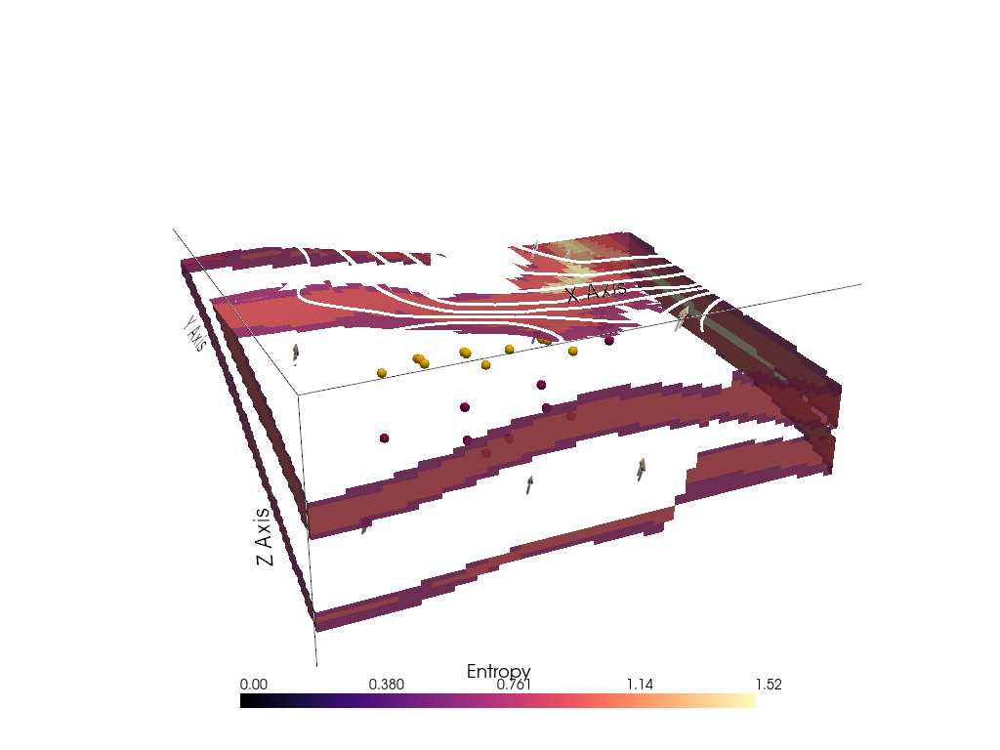
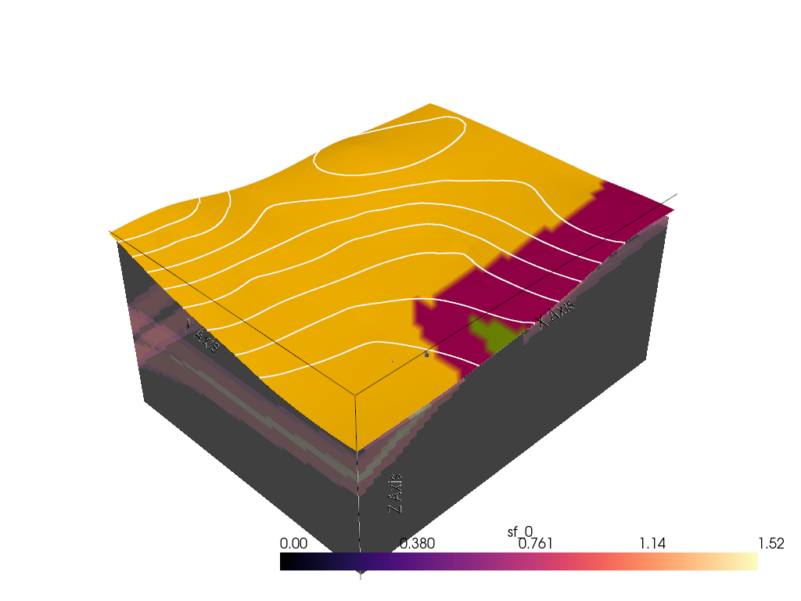

Note
Go to the end to download the full example code.
Bayesian Magnetic Inversion: Soricom Chromite Lens¶
This tutorial demonstrates Bayesian inversion of Total Magnetic Intensity (TMI) data using the Soricom fault structural model. It extends the magnetic inversion methodology to a more complex geological setting with a fault and a chromite lens hosted in ultramafic rocks.
What Makes the Soricom Model Different?
Unlike the simple Tharsis plutonite model, the Soricom model features:
A fault: The Main_Fault truncates all formations (fault-first structural frame ordering).
A chromite lens: A thin, high-susceptibility target embedded in host rock.
Smaller extent: ~500 m × 350 m area at UTM zone 34N coordinates.
Higher resolution: Octree refinement level 5 on a much smaller domain.
Data and Preprocessing
TMI data is extracted from a merged B1B2 raster at the Soricom prospect. The raw measurements are in nanoTesla (nT) and include Earth’s background magnetic field (~47,500 nT at this location). Since the GemPy forward model computes TMI anomalies (deviations from the background field), we subtract the IGRF (International Geomagnetic Reference Field) intensity before inversion:
Z position priors: Instead of dip priors, we define priors directly on the Z coordinates of the surface points. This requires a custom model-updating function during plotting and probability field generation.
Import Libraries¶
import os
from pathlib import Path
import inspect
import dotenv
dotenv.load_dotenv()
_HERE = Path(inspect.getfile(inspect.currentframe())).parent.resolve()
from gempy_probability.modules.plot.plot_posterior import default_red, default_blue
from mineye.GeoModel.model_one.visualization import plot_many_observed_vs_forward, probability_fields_for
from mineye.GeoModel.plotting.probabilistic_analysis import plot_geophysics_comparison
import numpy as np
import matplotlib.pyplot as plt
import gempy as gp
import gempy_probability as gpp
import gempy_viewer as gpv
from gempy_engine.core.data.geophysics_input import MagneticsInput
from gempy_engine.modules.geophysics.magnetic_gradient import calculate_magnetic_gradient_tensor
import torch
import pyro
import pyro.distributions as dist
import arviz as az
from gempy_probability.core.samplers_data import NUTSConfig
# Set random seeds for reproducibility
seed = 4003
pyro.set_rng_seed(seed)
torch.manual_seed(seed)
np.random.seed(1234)
Setting Backend To: AvailableBackends.PYTORCH
Import helper functions and config¶
from mineye.config import paths
from mineye.config.example_parameters import SoricomModelConfig
from mineye.GeoModel.geophysics import align_forward_to_observed
from mineye.GeoModel.model_one.probabilistic_model import normalize
from mineye.GeoModel.model_one.probabilistic_model_likelihoods import generate_multimagnetic_likelihood_fixed_std
Define Soricom Geological Model Helper¶
def _create_soricom_geomodel():
geo_model = gp.create_geomodel(
project_name=SoricomModelConfig.PROJECT_NAME,
extent=SoricomModelConfig.EXTENT,
refinement=SoricomModelConfig.REFINEMENT,
importer_helper=gp.data.ImporterHelper(
path_to_orientations=paths.get_soricom_orientations(),
path_to_surface_points=paths.get_soricom_formation_points(),
),
)
geo_model.grid = geo_model.grid.init_octree_grid(
extent=SoricomModelConfig.EXTENT,
octree_levels=SoricomModelConfig.REFINEMENT,
)
geo_model.interpolation_options.number_octree_levels_surface = 2
gp.map_stack_to_surfaces(
gempy_model=geo_model,
mapping_object=SoricomModelConfig.SURFACE_MAPPING,
)
geo_model.structural_frame.structural_groups[
SoricomModelConfig.FAULT_GROUP_INDEX
].structural_relation = gp.data.StackRelationType.FAULT
geo_model.structural_frame.fault_relations = SoricomModelConfig.FAULT_RELATIONS_MATRIX
return geo_model
Local plotting and model updating helper methods¶
_original_z_coords = None
def _update_model_for_plotting(geo_model: gp.data.GeoModel, sample_value: np.ndarray, sample_idx: int):
global _original_z_coords
if _original_z_coords is None:
_original_z_coords = geo_model.surface_points_copy.df['Z'].to_numpy(copy=True)
scale_z = geo_model.input_transform.scale[2]
shifts_m = sample_value / scale_z # Convert relative shifts in transformed coordinates to meters
new_z = _original_z_coords.copy()
# Point 0: Main_Fault (no change)
# Points 1-12: host_rock -> shifted by shifts_m[0] (layer wide)
new_z[1:13] = _original_z_coords[1:13] + shifts_m[0]
# Points 13-21: chromite lense -> shifted by shifts_m[1:] (independent)
new_z[13:22] = _original_z_coords[13:22] + shifts_m[1:]
gp.modify_surface_points(
geo_model=geo_model,
Z=new_z
)
def gempy_viz(geo_model: gp.data.GeoModel, prior_inference_data: az.InferenceData,
n_samples=20, ve=3):
from gempy_probability.modules.plot.plot_gempy import plot_gempy
import gempy_viewer as gpv
gp.set_active_grid(
grid=geo_model.grid,
grid_type=[geo_model.grid.GridTypes.OCTREE],
reset=True
)
geo_model.geophysics_input = None
gp.compute_model(gempy_model=geo_model)
p2d = gpv.plot_2d(
model=geo_model,
show_topography=False,
legend=False,
show_lith=False,
show_data=False,
show=False,
ve=ve
)
# Cache original Z *before* the prior loop mutates the model in-place
original_z = geo_model.surface_points_copy.df['Z'].to_numpy(copy=True)
global _original_z_coords
_original_z_coords = None
plot_gempy(
geo_model=geo_model,
n_samples=n_samples,
samples=(prior_inference_data.prior['surface_points_z'].values[0, :]),
update_model_fn=_update_model_for_plotting,
gempy_plot=p2d,
)
if hasattr(prior_inference_data, 'posterior'):
# Restore model to original Z so the posterior overlay is correctly anchored
gp.modify_surface_points(geo_model=geo_model, Z=original_z)
_original_z_coords = None
n_surfaces = len(geo_model.structural_frame.elements_colors_contacts)
plot_gempy(
geo_model=geo_model,
n_samples=n_samples,
samples=(prior_inference_data.posterior['surface_points_z'].values[0, :]),
update_model_fn=_update_model_for_plotting,
gempy_plot=p2d,
contour_colors=[default_red] * n_surfaces,
)
return p2d
Step 1: Read Magnetics Observations¶
def _read_magnetics():
xyz_path = _HERE / 'soricom_magnetic_xyz_adaptive.npy'
mag_path = _HERE / 'soricom_magnetic_values_adaptive.npy'
xyz = np.load(xyz_path)
mag = np.load(mag_path)
# Subsample 20 points for inversion (random subset)
rng = np.random.default_rng(42)
idx = rng.choice(len(xyz), size=min(20, len(xyz)), replace=False)
sampled_xyz = xyz[idx]
# IGRF: forward model outputs TMI anomalies, so subtract IGRF from raw TMI values
igrf_intensity_nT = 47500.0
observed_magnetics = mag[idx] - igrf_intensity_nT
return sampled_xyz, observed_magnetics
magnetic_data, observed_magnetics_nt = _read_magnetics()
print(f"Loaded {len(observed_magnetics_nt)} magnetic observations.")
Loaded 20 magnetic observations.
Step 2: Setup Geomodel and Centered Grid¶
geo_model = _create_soricom_geomodel()
xy_ravel = magnetic_data
gp.set_centered_grid(
grid=geo_model.grid,
centers=xy_ravel,
resolution=np.array([10, 10, 15]),
radius=np.array([2000, 5000, 2000]),
)
gradient_tensor_dict = calculate_magnetic_gradient_tensor(
centered_grid=geo_model.grid.centered_grid,
igrf_params={
"inclination": 57.0,
"declination": 4.0,
"intensity" : 47500.0,
},
compute_tmi=True,
units_nT=True,
)
geo_model.geophysics_input = gp.data.GeophysicsInput(
magnetics_input=MagneticsInput(
mag_kernel=gradient_tensor_dict['tmi_kernel'],
susceptibilities=np.array([0.0001, 0.0001, 0.5, 0.0001]),
igrf_params={
"inclination": gradient_tensor_dict['inclination'],
"declination": gradient_tensor_dict['declination'],
"intensity" : gradient_tensor_dict['intensity'],
},
),
)
geo_model.interpolation_options.mesh_extraction = False
gp.set_active_grid(
grid=geo_model.grid,
grid_type=[geo_model.grid.GridTypes.CENTERED],
reset=True,
)
gp.compute_model(geo_model)
Active grids: GridTypes.OCTREE|CENTERED|NONE
Active grids: GridTypes.CENTERED|NONE
Setting Backend To: AvailableBackends.PYTORCH
Step 3: Compute Baseline Forward Model¶
geo_model.interpolation_options.sigmoid_slope = 100
sol = gp.compute_model(geo_model)
if sol.magnetics is None:
raise RuntimeError("Magnetics forward model returned None.")
baseline_fw_magnetics_np = sol.magnetics.detach().cpu().numpy() if hasattr(sol.magnetics, 'detach') else sol.magnetics
Setting Backend To: AvailableBackends.PYTORCH
Step 4: Normalize and Align Forward Model to Observations¶
norm_params = normalize(
baseline_fw_gravity_np=baseline_fw_magnetics_np,
observed_gravity=observed_magnetics_nt,
method="align_to_reference",
extrapolation_buffer=0.3,
)
Computing align_to_reference alignment parameters...
Alignment params: {'method': 'align_to_reference', 'reference_mean': -211.51229858398438, 'reference_std': 81.00399017333984, 'baseline_forward_mean': -818.1753365703366, 'baseline_forward_std': 613.0473006705414}
Step 5: Define Priors and Deterministics¶
prior_key_surface_points_z = r'surface_points_z'
prior_key_susceptibility = r'susceptibility'
device = torch.device("cuda" if torch.cuda.is_available() else "cpu")
float_ = torch.float32
model_priors = {
prior_key_surface_points_z: dist.Normal(
loc=torch.tensor([0.0] * 10, dtype=float_, device=device),
scale=torch.tensor([15.0] * 10, dtype=float_, device=device) * geo_model.input_transform.scale[2],
validate_args=True,
).to_event(1),
prior_key_susceptibility: dist.LogNormal(
loc=torch.tensor([-9.21, -9.21, -0.69, -9.21], dtype=float_, device=device),
scale=torch.tensor([0.1, 0.1, 0.2, 0.1], dtype=float_, device=device),
).to_event(1),
}
def _set_magnetic_priors(samples: dict, geo_model: gp.data.GeoModel):
from gempy.modules.data_manipulation import interpolation_input_from_structural_frame
interp_input = interpolation_input_from_structural_frame(geo_model)
if prior_key_surface_points_z in samples:
shifts = samples[prior_key_surface_points_z]
coords = interp_input.surface_points.sp_coords.clone()
# Index 1:13 are the 12 host_rock points -> shifted by shifts[0] (layer wide)
coords[1:13, 2] = coords[1:13, 2] + shifts[0]
# Index 13:22 are the 9 chromite lense points -> shifted by shifts[1:] (independent)
coords[13:22, 2] = coords[13:22, 2] + shifts[1:]
interp_input.surface_points.sp_coords = coords
if prior_key_susceptibility in samples:
susceptibilities = samples[prior_key_susceptibility]
if geo_model.geophysics_input and geo_model.geophysics_input.magnetics_input:
geo_model.geophysics_input.magnetics_input.susceptibilities = susceptibilities
return interp_input
Step 6: Create Probabilistic Model and Likelihood Function¶
likelihood_fn = generate_multimagnetic_likelihood_fixed_std(
norm_params=norm_params,
sigma_value=150.0,
)
prob_model: gpp.GemPyPyroModel = gpp.make_gempy_pyro_model(
priors=model_priors,
set_interp_input_fn=_set_magnetic_priors,
likelihood_fn=likelihood_fn,
obs_name="Magnetic Measurement (Soricom)",
)
Setting Backend To: AvailableBackends.PYTORCH
Step 7: Run MCMC / NUTS Inference¶
RUN_SIMULATION = False
if RUN_SIMULATION:
prior_inference_data: az.InferenceData = gpp.run_predictive(
prob_model=prob_model,
geo_model=geo_model,
y_obs_list=torch.tensor(observed_magnetics_nt),
n_samples=100,
plot_trace=True,
)
data = gpp.run_nuts_inference(
prob_model=prob_model,
geo_model=geo_model,
y_obs_list=torch.tensor(observed_magnetics_nt),
config=NUTSConfig(
step_size=0.0001,
adapt_step_size=True,
target_accept_prob=0.65,
max_tree_depth=5,
init_strategy='median',
num_samples=200,
warmup_steps=200,
),
plot_trace=True,
run_posterior_predictive=True,
)
data.extend(prior_inference_data)
data.to_netcdf(str(_HERE / "arviz_data_magnetic_soricom_z_1779986757.nc"))
else:
data_path = _HERE / "arviz_data_magnetic_soricom_z.nc"
if not data_path.exists():
raise FileNotFoundError(
f"Pre-computed NetCDF data file not found at {data_path}. "
"Please run the simulation with RUN_SIMULATION=True first."
)
data = az.from_netcdf(str(data_path))
Analysis: Parameter Posterior Distributions¶
az.plot_posterior(data, var_names=[prior_key_surface_points_z, "susceptibility"])
plt.show()

Compare Prior vs Posterior Distributions¶
plt.rcParams['figure.dpi'] = 72
axes = az.plot_density(
data=[data, data.prior],
var_names=[prior_key_surface_points_z, "susceptibility"],
filter_vars="like",
hdi_prob=0.9999,
shade=.2,
data_labels=["Posterior", "Prior"],
colors=[default_red, default_blue],
)
plt.show()

Analysis: Predictive Performance and Fit¶
magnetic_response_key = r'$\mu_{magnetics}$'
plot_geophysics_comparison(
forward_norm=data.prior[magnetic_response_key].mean(axis=1),
normalization_method='align_to_reference',
observed_ugal=observed_magnetics_nt,
xy_ravel=xy_ravel,
)
plt.show()
plot_geophysics_comparison(
forward_norm=data.posterior_predictive[magnetic_response_key].mean(axis=1),
normalization_method='align_to_reference',
observed_ugal=observed_magnetics_nt,
xy_ravel=xy_ravel,
)
plt.show()


Observed vs Forward Model Correlation¶
observed_norm = observed_magnetics_nt
forward_norm = data.prior[magnetic_response_key].mean(axis=1)
many_forward_norm = data.posterior_predictive[magnetic_response_key].values[
0, -40:-20
]
plot_many_observed_vs_forward(forward_norm, many_forward_norm, observed_norm, unit_label='nT')

Visualize Representative Realizations¶
gempy_viz(geo_model, data, n_samples=50)
plt.show()

Active grids: GridTypes.OCTREE|NONE
Setting Backend To: AvailableBackends.PYTORCH
/home/leguark/.venv/2025/lib/python3.13/site-packages/torch/utils/_device.py:116: UserWarning: To copy construct from a tensor, it is recommended to use sourceTensor.detach().clone() or sourceTensor.detach().clone().requires_grad_(True), rather than torch.tensor(sourceTensor).
return func(*args, **kwargs)
Setting Backend To: AvailableBackends.PYTORCH
/home/leguark/Projects/gempy_project/gempy_viewer/gempy_viewer/modules/plot_2d/drawer_contours_2d.py:38: UserWarning: The following kwargs were not used by contour: 'linewidth', 'contour_colors'
contour_set = ax.contour(
Setting Backend To: AvailableBackends.PYTORCH
Setting Backend To: AvailableBackends.PYTORCH
Setting Backend To: AvailableBackends.PYTORCH
Setting Backend To: AvailableBackends.PYTORCH
Setting Backend To: AvailableBackends.PYTORCH
Setting Backend To: AvailableBackends.PYTORCH
Setting Backend To: AvailableBackends.PYTORCH
Setting Backend To: AvailableBackends.PYTORCH
Setting Backend To: AvailableBackends.PYTORCH
Setting Backend To: AvailableBackends.PYTORCH
Setting Backend To: AvailableBackends.PYTORCH
Setting Backend To: AvailableBackends.PYTORCH
Setting Backend To: AvailableBackends.PYTORCH
Setting Backend To: AvailableBackends.PYTORCH
Setting Backend To: AvailableBackends.PYTORCH
Setting Backend To: AvailableBackends.PYTORCH
Setting Backend To: AvailableBackends.PYTORCH
Setting Backend To: AvailableBackends.PYTORCH
Setting Backend To: AvailableBackends.PYTORCH
Setting Backend To: AvailableBackends.PYTORCH
Setting Backend To: AvailableBackends.PYTORCH
Setting Backend To: AvailableBackends.PYTORCH
Setting Backend To: AvailableBackends.PYTORCH
Setting Backend To: AvailableBackends.PYTORCH
Setting Backend To: AvailableBackends.PYTORCH
Setting Backend To: AvailableBackends.PYTORCH
Setting Backend To: AvailableBackends.PYTORCH
Setting Backend To: AvailableBackends.PYTORCH
Setting Backend To: AvailableBackends.PYTORCH
Setting Backend To: AvailableBackends.PYTORCH
Setting Backend To: AvailableBackends.PYTORCH
Setting Backend To: AvailableBackends.PYTORCH
Setting Backend To: AvailableBackends.PYTORCH
Setting Backend To: AvailableBackends.PYTORCH
Setting Backend To: AvailableBackends.PYTORCH
Setting Backend To: AvailableBackends.PYTORCH
Setting Backend To: AvailableBackends.PYTORCH
Setting Backend To: AvailableBackends.PYTORCH
Setting Backend To: AvailableBackends.PYTORCH
Setting Backend To: AvailableBackends.PYTORCH
Setting Backend To: AvailableBackends.PYTORCH
Setting Backend To: AvailableBackends.PYTORCH
Setting Backend To: AvailableBackends.PYTORCH
Setting Backend To: AvailableBackends.PYTORCH
Setting Backend To: AvailableBackends.PYTORCH
Setting Backend To: AvailableBackends.PYTORCH
Setting Backend To: AvailableBackends.PYTORCH
Setting Backend To: AvailableBackends.PYTORCH
Setting Backend To: AvailableBackends.PYTORCH
Setting Backend To: AvailableBackends.PYTORCH
Setting Backend To: AvailableBackends.PYTORCH
Setting Backend To: AvailableBackends.PYTORCH
Setting Backend To: AvailableBackends.PYTORCH
Setting Backend To: AvailableBackends.PYTORCH
Setting Backend To: AvailableBackends.PYTORCH
Setting Backend To: AvailableBackends.PYTORCH
Setting Backend To: AvailableBackends.PYTORCH
Setting Backend To: AvailableBackends.PYTORCH
Setting Backend To: AvailableBackends.PYTORCH
Setting Backend To: AvailableBackends.PYTORCH
Setting Backend To: AvailableBackends.PYTORCH
Setting Backend To: AvailableBackends.PYTORCH
Setting Backend To: AvailableBackends.PYTORCH
Setting Backend To: AvailableBackends.PYTORCH
Setting Backend To: AvailableBackends.PYTORCH
Setting Backend To: AvailableBackends.PYTORCH
Setting Backend To: AvailableBackends.PYTORCH
Setting Backend To: AvailableBackends.PYTORCH
Setting Backend To: AvailableBackends.PYTORCH
Setting Backend To: AvailableBackends.PYTORCH
Setting Backend To: AvailableBackends.PYTORCH
Setting Backend To: AvailableBackends.PYTORCH
Setting Backend To: AvailableBackends.PYTORCH
Setting Backend To: AvailableBackends.PYTORCH
Setting Backend To: AvailableBackends.PYTORCH
Setting Backend To: AvailableBackends.PYTORCH
Setting Backend To: AvailableBackends.PYTORCH
Setting Backend To: AvailableBackends.PYTORCH
Setting Backend To: AvailableBackends.PYTORCH
Setting Backend To: AvailableBackends.PYTORCH
Setting Backend To: AvailableBackends.PYTORCH
Setting Backend To: AvailableBackends.PYTORCH
Setting Backend To: AvailableBackends.PYTORCH
Setting Backend To: AvailableBackends.PYTORCH
Setting Backend To: AvailableBackends.PYTORCH
Setting Backend To: AvailableBackends.PYTORCH
Setting Backend To: AvailableBackends.PYTORCH
Setting Backend To: AvailableBackends.PYTORCH
Setting Backend To: AvailableBackends.PYTORCH
Setting Backend To: AvailableBackends.PYTORCH
Setting Backend To: AvailableBackends.PYTORCH
Setting Backend To: AvailableBackends.PYTORCH
Setting Backend To: AvailableBackends.PYTORCH
Setting Backend To: AvailableBackends.PYTORCH
Setting Backend To: AvailableBackends.PYTORCH
Setting Backend To: AvailableBackends.PYTORCH
Setting Backend To: AvailableBackends.PYTORCH
Setting Backend To: AvailableBackends.PYTORCH
Setting Backend To: AvailableBackends.PYTORCH
Probability Density Fields and Information Entropy¶
topography_path = paths.get_soricom_dem_path()
print("\nComputing prior probability fields...")
original_z = geo_model.surface_points_copy.df['Z'].to_numpy(copy=True)
geo_model = _create_soricom_geomodel()
geo_model.interpolation_options.number_octree_levels = 5
probability_fields_for(
geo_model=geo_model,
inference_data=data.prior,
topography_path=topography_path,
var_name=prior_key_surface_points_z,
update_model_fn=_update_model_for_plotting,
ve=1,
)
if hasattr(data, 'posterior'):
# Restore model Z so posterior OnlineProbability init uses baseline lithology
gp.modify_surface_points(geo_model=geo_model, Z=original_z)
_original_z_coords = None
print("\nComputing posterior probability fields...")
probability_fields_for(
geo_model=geo_model,
inference_data=data.posterior,
topography_path=topography_path,
var_name=prior_key_surface_points_z,
update_model_fn=_update_model_for_plotting,
pyvista_filename="probability_fields_paper_pyvista_soricom.png",
ve=1,
)







Computing prior probability fields...
Active grids: GridTypes.DENSE|NONE
Setting Backend To: AvailableBackends.PYTORCH
/home/leguark/.venv/2025/lib/python3.13/site-packages/torch/utils/_device.py:116: UserWarning: Using torch.cross without specifying the dim arg is deprecated.
Please either pass the dim explicitly or simply use torch.linalg.cross.
The default value of dim will change to agree with that of linalg.cross in a future release. (Triggered internally at /pytorch/aten/src/ATen/native/Cross.cpp:63.)
return func(*args, **kwargs)
Setting Backend To: AvailableBackends.PYTORCH
Setting Backend To: AvailableBackends.PYTORCH
Setting Backend To: AvailableBackends.PYTORCH
Setting Backend To: AvailableBackends.PYTORCH
Setting Backend To: AvailableBackends.PYTORCH
Active grids: GridTypes.DENSE|TOPOGRAPHY|NONE
Setting Backend To: AvailableBackends.PYTORCH
[SUCCESS] Generated paper-quality figure saved to: /home/leguark/Projects/gempy_project/Mineye-Terranigma/examples/02_probabilistic_modeling/probability_fields_paper.png
/home/leguark/Projects/gempy_project/gempy_viewer/gempy_viewer/modules/plot_3d/drawer_topography_3d.py:29: PyVistaFutureWarning: The default value of `algorithm` for the filter
`StructuredGrid.extract_surface` will change in the future. It currently defaults to
`'dataset_surface'`, but will change to `None`. Explicitly set the `algorithm` keyword to
silence this warning.
polydata = grid.extract_surface()
/home/leguark/Projects/gempy_project/gempy_viewer/gempy_viewer/modules/plot_3d/drawer_topography_3d.py:29: PyVistaFutureWarning: The default value of `algorithm` for the filter
`StructuredGrid.extract_surface` will change in the future. It currently defaults to
`'dataset_surface'`, but will change to `None`. Explicitly set the `algorithm` keyword to
silence this warning.
polydata = grid.extract_surface()
/home/leguark/Projects/gempy_project/gempy_viewer/gempy_viewer/modules/plot_3d/drawer_topography_3d.py:29: PyVistaFutureWarning: The default value of `algorithm` for the filter
`StructuredGrid.extract_surface` will change in the future. It currently defaults to
`'dataset_surface'`, but will change to `None`. Explicitly set the `algorithm` keyword to
silence this warning.
polydata = grid.extract_surface()
/home/leguark/Projects/gempy_project/gempy_viewer/gempy_viewer/modules/plot_3d/drawer_topography_3d.py:29: PyVistaFutureWarning: The default value of `algorithm` for the filter
`StructuredGrid.extract_surface` will change in the future. It currently defaults to
`'dataset_surface'`, but will change to `None`. Explicitly set the `algorithm` keyword to
silence this warning.
polydata = grid.extract_surface()
[SUCCESS] Generated PyVista paper-quality figure saved to: /home/leguark/Projects/gempy_project/Mineye-Terranigma/examples/02_probabilistic_modeling/probability_fields_paper_pyvista.png
/home/leguark/Projects/gempy_project/gempy_viewer/gempy_viewer/modules/plot_3d/drawer_topography_3d.py:29: PyVistaFutureWarning: The default value of `algorithm` for the filter
`StructuredGrid.extract_surface` will change in the future. It currently defaults to
`'dataset_surface'`, but will change to `None`. Explicitly set the `algorithm` keyword to
silence this warning.
polydata = grid.extract_surface()
Computing posterior probability fields...
Active grids: GridTypes.DENSE|NONE
Setting Backend To: AvailableBackends.PYTORCH
Setting Backend To: AvailableBackends.PYTORCH
Setting Backend To: AvailableBackends.PYTORCH
Setting Backend To: AvailableBackends.PYTORCH
Setting Backend To: AvailableBackends.PYTORCH
Setting Backend To: AvailableBackends.PYTORCH
Active grids: GridTypes.DENSE|TOPOGRAPHY|NONE
Setting Backend To: AvailableBackends.PYTORCH
[SUCCESS] Generated paper-quality figure saved to: /home/leguark/Projects/gempy_project/Mineye-Terranigma/examples/02_probabilistic_modeling/probability_fields_paper.png
/home/leguark/Projects/gempy_project/gempy_viewer/gempy_viewer/modules/plot_3d/drawer_topography_3d.py:29: PyVistaFutureWarning: The default value of `algorithm` for the filter
`StructuredGrid.extract_surface` will change in the future. It currently defaults to
`'dataset_surface'`, but will change to `None`. Explicitly set the `algorithm` keyword to
silence this warning.
polydata = grid.extract_surface()
/home/leguark/Projects/gempy_project/gempy_viewer/gempy_viewer/modules/plot_3d/drawer_topography_3d.py:29: PyVistaFutureWarning: The default value of `algorithm` for the filter
`StructuredGrid.extract_surface` will change in the future. It currently defaults to
`'dataset_surface'`, but will change to `None`. Explicitly set the `algorithm` keyword to
silence this warning.
polydata = grid.extract_surface()
/home/leguark/Projects/gempy_project/gempy_viewer/gempy_viewer/modules/plot_3d/drawer_topography_3d.py:29: PyVistaFutureWarning: The default value of `algorithm` for the filter
`StructuredGrid.extract_surface` will change in the future. It currently defaults to
`'dataset_surface'`, but will change to `None`. Explicitly set the `algorithm` keyword to
silence this warning.
polydata = grid.extract_surface()
/home/leguark/Projects/gempy_project/gempy_viewer/gempy_viewer/modules/plot_3d/drawer_topography_3d.py:29: PyVistaFutureWarning: The default value of `algorithm` for the filter
`StructuredGrid.extract_surface` will change in the future. It currently defaults to
`'dataset_surface'`, but will change to `None`. Explicitly set the `algorithm` keyword to
silence this warning.
polydata = grid.extract_surface()
[SUCCESS] Generated PyVista paper-quality figure saved to: /home/leguark/Projects/gempy_project/Mineye-Terranigma/examples/02_probabilistic_modeling/probability_fields_paper_pyvista_soricom.png
/home/leguark/Projects/gempy_project/gempy_viewer/gempy_viewer/modules/plot_3d/drawer_topography_3d.py:29: PyVistaFutureWarning: The default value of `algorithm` for the filter
`StructuredGrid.extract_surface` will change in the future. It currently defaults to
`'dataset_surface'`, but will change to `None`. Explicitly set the `algorithm` keyword to
silence this warning.
polydata = grid.extract_surface()
Total running time of the script: (0 minutes 37.369 seconds)